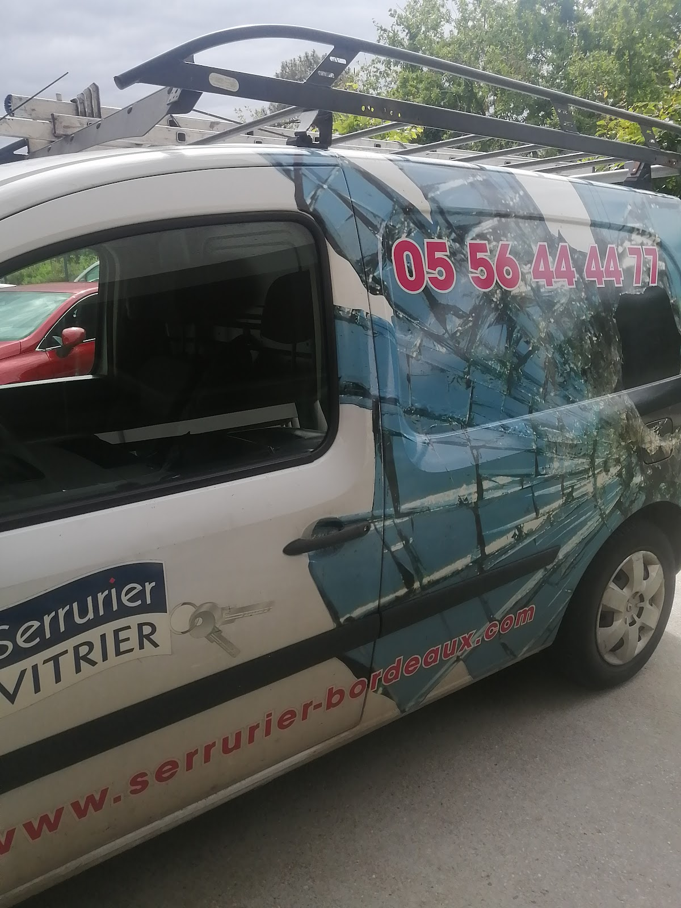
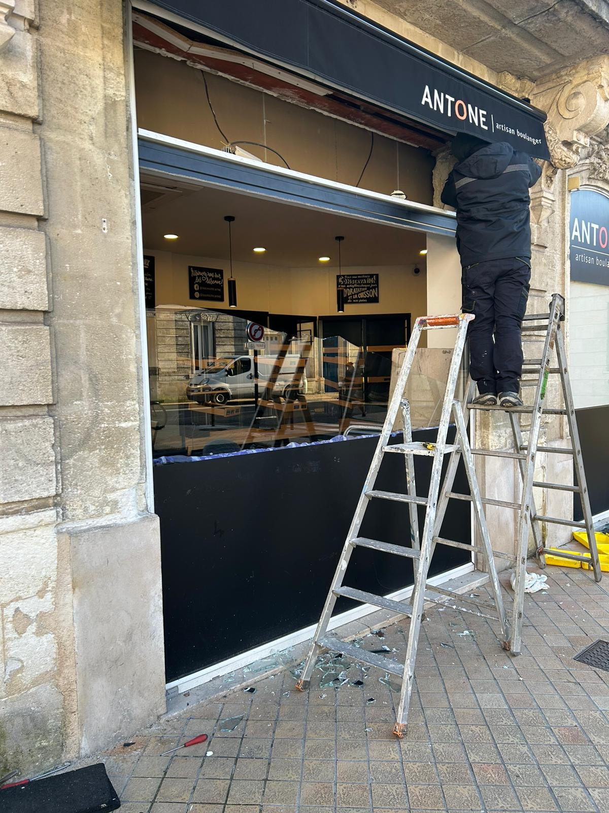
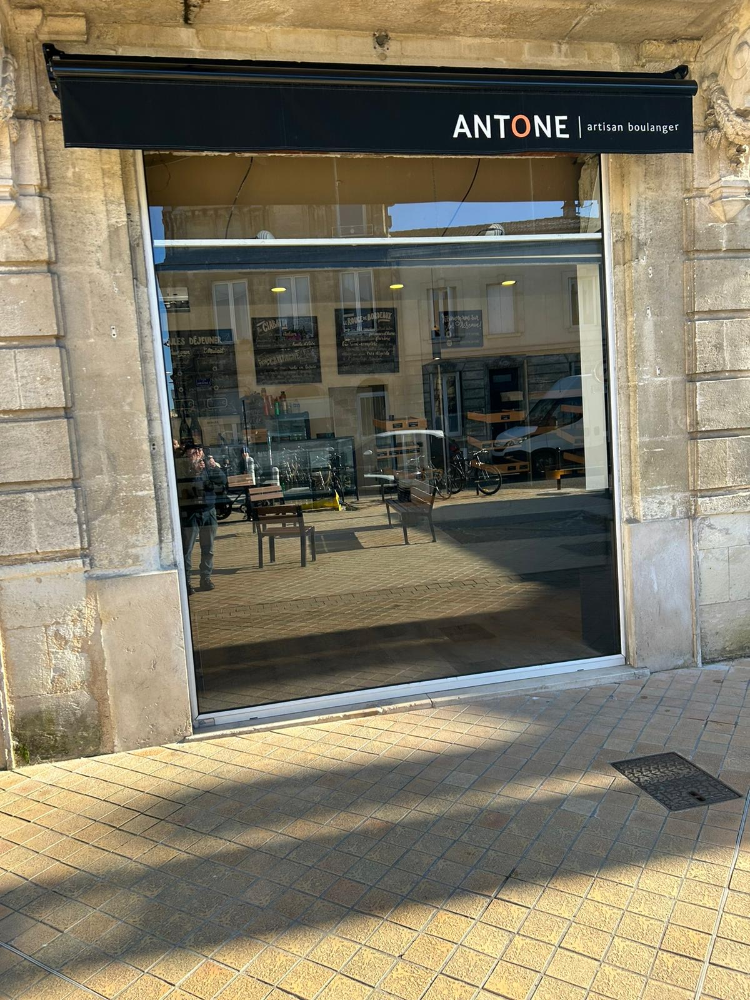
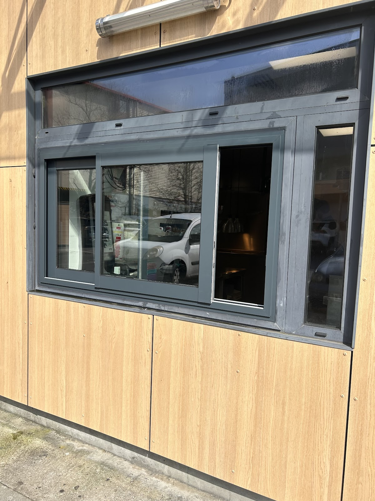
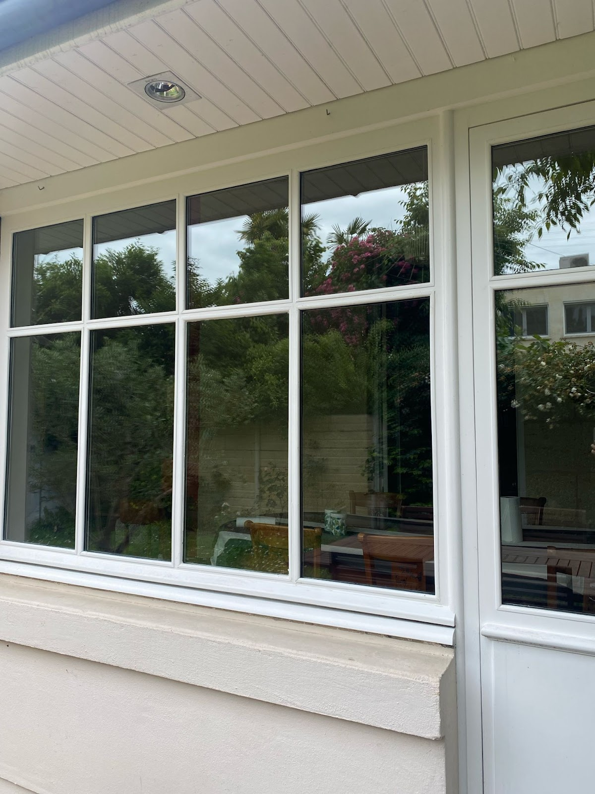
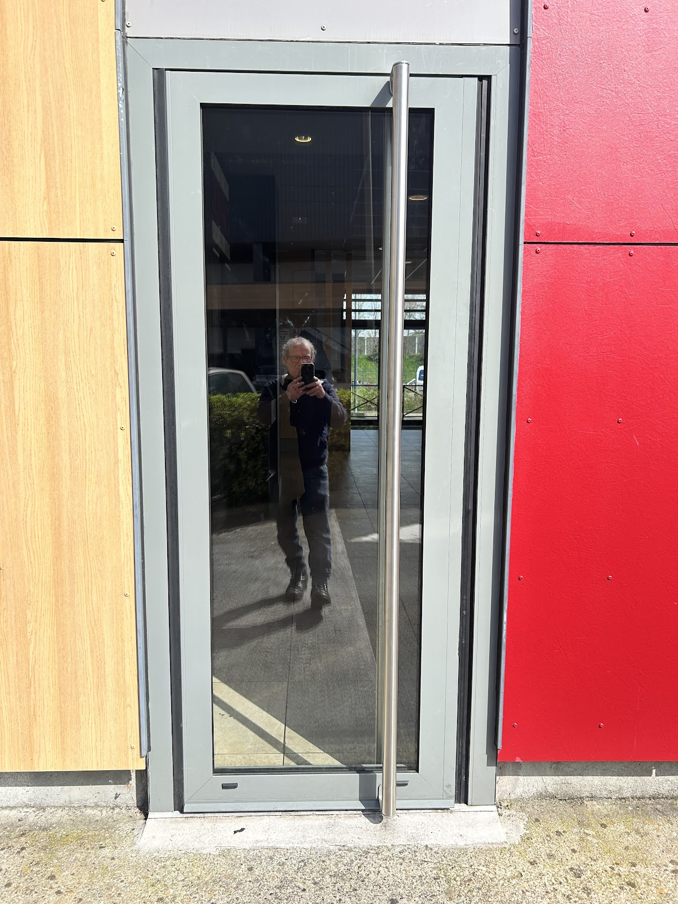

Ouverture de porte
Porte claquée, serrure bloquée ou clé restée à l'intérieur : prise en charge des situations qui empêchent l'accès à votre logement ou local.
Voir la serrurerie →
Porte claquée, serrure bloquée, remplacement de cylindre ou vitrage endommagé : Abaca intervient pour le dépannage, la réparation et l'installation en serrurerie et vitrerie à Bordeaux et alentours.
Dépannage ponctuel ou travaux d'installation : les prestations couvrent les besoins courants en serrurerie, protection des accès et vitrerie.
Porte claquée, serrure bloquée ou clé restée à l'intérieur : prise en charge des situations qui empêchent l'accès à votre logement ou local.
Voir la serrurerie →Remplacement ou installation de serrure, cylindre et poignée de porte lorsque l'équipement est défaillant, à renforcer ou à renouveler.
En savoir plus →Pose de bloc-porte blindé, dispositifs renforcés et mise en sécurité temporaire après une tentative d'effraction.
Sécuriser un accès →Remplacement de vitre brisée, vitrage de fenêtre, baie vitrée ou vitrine de commerce, ainsi que pose de petits carreaux.
Voir la vitrerie →Solutions de vitrage adaptées aux fenêtres et baies vitrées, avec remplacement ou installation selon la configuration existante.
Découvrir les vitrages →Intervention sur rideaux métalliques et volets roulants, pour l'installation, l'entretien ou le dépannage des fermetures.
Voir les fermetures →

Un problème de serrure est souvent stressant. L'objectif est de remettre l'accès en état tout en privilégiant une intervention propre, une solution adaptée et une information claire.
Le devis est gratuit avant intervention et le tarif annoncé est maintenu.
Les travaux sont réalisés dans les règles de l’art et bénéficient d’une garantie annoncée pendant un an.
Abaca travaille avec plusieurs compagnies d’assistance et d’assurance, ainsi qu’avec les services de police nationale et de gendarmerie.
Agence située au 3 Rue de Laseppe, 33000 Bordeaux, avec des interventions annoncées dans l’agglomération.
Une activité de vitrerie à Bordeaux depuis 1996.
Selon planning, circulation et interventions en cours ; ce délai reste indicatif.
Sans engagement, avec un tarif annoncé comme maintenu par l’entreprise.
Pour les travaux réalisés par les techniciens, pour les travaux réalisés par les techniciens.
Un parcours pensé pour aller rapidement de votre problème à une solution adaptée.
Décrivez la situation, le type de porte, de serrure ou de vitrage et l'adresse d'intervention.
Urgence, remplacement, réparation ou installation : la demande est clarifiée avant l'intervention.
L'intervention vise à retrouver un accès fonctionnel, sécurisé et une finition propre.
Quelques interventions et réalisations photographiées autour des accès, vitrines et menuiseries.




Abaca Serrurier Vitrier affiche une note moyenne de 4,6/5 pour 76 avis Google. Sélection de retours réellement publiés sur la fiche de l’établissement.
Merci au technicien pour sa prestation. Ça a été un peu plus compliqué que prévu car ma porte a des moulures et pas hyper pratique avec la serrure carénée qu’on a mise. Les heures sup n’ont pas été facturées. Le résultat est nickel. Et le prix attractif (j’ai fait des devis chez plusieurs serruriers). Je recommande !
Bloqués à l’extérieur de la maison avec la clé restée dans la serrure à l'intérieur, nous avons appelé Abaca. Une heure après, et bien que ce soit un vendredi soir, un technicien très aimable nous a dépannés, sans dégâts et sans faire gonfler la facture comme ça peut arriver... Je recommande donc cette entreprise pour son sérieux et son efficacité.
Responsable d'une conciergerie, ça fait la deuxième fois que je fais appel à ce prestataire. Travail soigné, rapide et excellente finition. je recommande ce prestataire.
Le technicien m'a sorti d'affaire, service incroyable contre toute attente pour un dépannage d'urgence en pleine nuit. Je recommande sans hésitation. Encore merci 🙏
Le service est basé à Bordeaux et intervient également dans plusieurs communes et secteurs mentionnés par l'entreprise.
Les informations utiles pour savoir quoi préparer et quel type d'intervention envisager.
Les prestations mentionnées comprennent notamment l'ouverture de porte bloquée ou claquée, le changement de cylindre et de serrure, la pose de serrure de sécurité, la porte blindée, la sécurisation après effraction ainsi que les rideaux métalliques et volets roulants.
Oui. Les prestations de vitrerie couvrent le remplacement de vitre brisée, fenêtres, vitrines et baies vitrées, ainsi que le double vitrage, le triple vitrage, les petits carreaux et les verres retardateurs d'effraction.
Les horaires indiqués sur la fiche de l'établissement sont de 08:00 à 22:00, du lundi au dimanche.
Appelez le 05 56 44 44 77 en décrivant le problème et le type d'équipement concerné. L'entreprise indique proposer un devis gratuit et sans engagement.
L'entreprise est basée à Bordeaux et mentionne notamment des interventions à Mérignac, Pessac, Talence, Bègles, Le Bouscat, Villenave-d'Ornon, Bordeaux Caudéran et Libourne.
Indiquez votre adresse, le type de porte ou de vitrage, ce qui s'est produit, si la porte est claquée ou verrouillée et, si possible, la marque ou une photo de l'équipement. Cela aide à mieux qualifier le besoin au téléphone.
Expliquez votre situation et obtenez les informations utiles pour organiser un dépannage ou un projet de serrurerie / vitrerie.